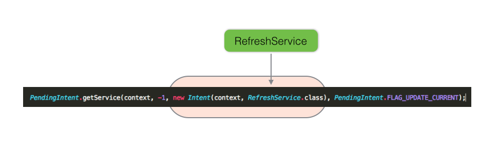

Here we refactor Donation Android client to update the donations list from the service. Two methods are explored. One technique handles a menu-generated event. The other makes use of an Android service.
We shall introduce two further Android building blocks in this lab:
Services
Broadcast Receivers
Your Android Donation app starter code is available at this url:
https://github.com/wit-computing/donation-android-2015-03A locally archived copy is also available:
Use the service completed at the end of donation-09:
We now describe how to implement a manual (menu-driven) refresh facility in the Report activity.
The steps required are as follows:
Add the following menu item to res/menu/menu_report.xml. This will introduce the rotate icon as shown in Figure 1.
<item
android:id="@+id/action_refresh"
android:icon="@android:drawable/ic_menu_rotate"
app:showAsAction="always"
android:title="@string/refresh"/>Refactor Report activity as follows:
Here is the new method.
private void refreshDonationList()
{
Call<List<Donation>> call = (Call<List<Donation>>) app.donationService.getAllDonations();
call.enqueue(this);
}Add a refresh menu handler in onOptionsItemSelected. This will initiate a network call to retrieve the current list of donations.
@Override
public boolean onOptionsItemSelected(MenuItem item)
{
...
case R.id.action_refresh:
refreshDonationList();
return true;
}The code to update the view is already in place in onResponse:
adapter.notifyDataSetChanged();Add some donations, switch to Report and refresh. The newly added donations should appear in the list.
We will require some helper code with which we are already familiar.
Create a package app.android.helpers and add these classes. You have already used supersets of these classes in MyRent and MyTweet.
package android.helpers;
import android.app.Activity;
import android.content.Intent;
import android.support.v4.app.NavUtils;
public class IntentHelper
{
public static void navigateUp(Activity parent)
{
Intent upIntent = NavUtils.getParentActivityIntent(parent);
NavUtils.navigateUpTo(parent, upIntent);
}
}package android.helpers;
import android.util.Log;
public class LogHelpers
{
public static void info(Object parent, String message)
{
Log.i(parent.getClass().getSimpleName(), message);
}
}Here we shall create RefreshService, a subclass of Android's IntentService.
Create a package app.donation.services.
In this package create a new class, RefreshService that subclasses IntentService:
package app.donation.services;
public class RefreshService extends IntentService
{
private String tag = "Donation";
DonationApp app;
public RefeshService()
{
super("RefreshService");
}
}Add an import statement for IntentService:
import android.app.IntentService;Add unimplemented method:
@Override
protected void onHandleIntent(Intent intent)
{
// TODO Auto-generated method stub
}An import for Intent is required:
import android.content.Intent;The code should now be error free.
The method onHandleIntent runs on a worker thread once an instance of RefreshService is started.
In onHandleIntent we shall:
@Override
protected void onHandleIntent(Intent intent)
{
app = (DonationApp) getApplication();
Intent localIntent = new Intent(Report.BROADCAST_ACTION);
Call<List<Donation>> call = (Call<List<Donation>>) app.donationService.getAllDonations();
try
{
Response<List<Donation>> response = call.execute();
app.donations = response.body();
LocalBroadcastManager.getInstance(this).sendBroadcast(localIntent);
}
catch (IOException e)
{
LogHelpers.info(tag, "Failed to retrieve donations list - network error");
}
}Add an onDestroy method, soley for the purpose of creating a log entry:
@Override
public void onDestroy()
{
super.onDestroy();
LogHelpers.info(this, "onDestroyed");
}For reference, here is the complete class:
package app.donation.services;
import android.app.IntentService;
import android.content.Intent;
import android.support.v4.content.LocalBroadcastManager;
import java.io.IOException;
import java.util.List;
import app.android.helpers.LogHelpers;
import app.donation.activity.Report;
import app.donation.main.DonationApp;
import app.donation.model.Donation;
import retrofit.Call;
import retrofit.Response;
public class RefreshService extends IntentService
{
private String tag = "Donation";
DonationApp app;
public RefreshService()
{
super("RefreshService");
}
@Override
protected void onHandleIntent(Intent intent)
{
app = (DonationApp) getApplication();
Intent localIntent = new Intent(Report.BROADCAST_ACTION);
Call<List<Donation>> call = (Call<List<Donation>>) app.donationService.getAllDonations();
try
{
Response<List<Donation>> response = call.execute();
app.donations = response.body();
LocalBroadcastManager.getInstance(this).sendBroadcast(localIntent);
}
catch (IOException e)
{
LogHelpers.info(tag, "Failed to retrieve donations list - network error");
}
}
@Override
public void onDestroy()
{
super.onDestroy();
LogHelpers.info(tag, "RefreshService instance destroyed");
}
}In this step we shall configure Report activity to receive and respond to an Intent broadcast from the RefreshService implemented in the previous step.
The steps required are:
Here is the code related to above that should be inserted in the appropriate locations in Report.java.
public static final String BROADCAST_ACTION = "app.donation.activity.Report";Register broadcast receiver:
private IntentFilter intentFilter;In onCreate:
intentFilter = new IntentFilter(BROADCAST_ACTION);
registerBroadcastReceiver(intentFilter); private void registerBroadcastReceiver(IntentFilter intentFilter)
{
ResponseReceiver responseReceiver = new ResponseReceiver();
LocalBroadcastManager.getInstance(this).registerReceiver(responseReceiver, intentFilter);
}Inner class:
//Broadcast receiver for receiving status updates from the IntentService
private class ResponseReceiver extends BroadcastReceiver
{
// Called when the BroadcastReceiver gets an Intent it's registered to receive
@Override
public void onReceive(Context context, Intent intent)
{
adapter.donations = app.donations;
adapter.notifyDataSetChanged();
}
}Report activity is now receptive to in coming intents broadcasted by the RefreshService.
However, we still have not taken steps to start the RefreshService. This we shall do in the following step.
Here we shall add a Preferences module and use it to store a refresh interval.
Create a new folder res/xml and add a file: settings.xml. If the folder (directory) already exists then simply add the following EditTextPreference node.
File: settings.xml
<?xml version="1.0" encoding="utf-8"?>
<PreferenceScreen xmlns:android="http://schemas.android.com/apk/res/android" >
<EditTextPreference
android:key="refresh_interval"
android:summary="@string/refresh_subtitle"
android:title="@string/refresh" />
</PreferenceScreen>Add a new string element to res/values/strings.xml
<string name="refresh_subtitle">Enter refresh interval (minutes)</string>Add a new package app.donation.settings in which the follows files should be located:
SettingsActivity.java
package app.settings;
import android.app.Activity;
import android.os.Bundle;
public class SettingsActivity extends Activity
{
@Override
protected void onCreate(Bundle savedInstanceState)
{
super.onCreate(savedInstanceState);
if (savedInstanceState == null)
{
SettingsFragment fragment = new SettingsFragment();
getFragmentManager().beginTransaction().add(android.R.id.content, fragment, fragment.getClass().getSimpleName())
.commit();
}
;
}
}SettingsFragment.java
package app.settings;
import static android.helpers.IntentHelper.navigateUp;
import android.content.Intent;
import android.content.SharedPreferences;
import android.content.SharedPreferences.OnSharedPreferenceChangeListener;
import android.os.Bundle;
import android.preference.PreferenceFragment;
import android.preference.PreferenceManager;
import android.view.LayoutInflater;
import android.view.MenuItem;
import android.view.View;
import android.view.ViewGroup;
import app.donation.R;
import app.donation.services.RefreshService;
public class SettingsFragment extends PreferenceFragment implements OnSharedPreferenceChangeListener
{
private SharedPreferences settings;
@Override
public void onCreate(Bundle savedInstanceState)
{
super.onCreate(savedInstanceState);
setHasOptionsMenu(true);
addPreferencesFromResource(R.xml.settings);
}
@Override
public View onCreateView(LayoutInflater inflater, ViewGroup container, Bundle savedInstanceState)
{
getActivity().getActionBar().setDisplayHomeAsUpEnabled(true);
return super.onCreateView(inflater, container, savedInstanceState);
}
@Override
public void onStart()
{
super.onStart();
settings = PreferenceManager.getDefaultSharedPreferences(getActivity());
settings.registerOnSharedPreferenceChangeListener(this);
}
@Override
public boolean onOptionsItemSelected(MenuItem item)
{
switch (item.getItemId())
{
case android.R.id.home:
navigateUp(getActivity());
return true;
default:
return super.onOptionsItemSelected(item);
}
}
@Override
public void onSharedPreferenceChanged(SharedPreferences sharedPreferences, String key)
{
}
}Register the new activity in the manifest file.
<activity
android:name="app.settings.SettingsActivity"
android:label="@string/action_settings" >
<meta-data
android:name="android.support.PARENT_ACTIVITY"
android:value=".activities.ReportActivity"/>
</activity>Note that we are making provision for using the Up button to navigate to the Report activity once done in Settings.
In Report introduce a menu handler in onOptionsItemSelected:
case R.id.action_settings:
startActivity(new Intent(this, SettingsActivity.class));
return true;This import statment is required:
import app.settings.SettingsActivity;You may wish to repeat for the Donation view. At the moment, the menu settings item is now wired up in this view (Report).
A sample Android project archive demonstrating the use of Shared Preferences to set the refresh interval is available to download: shared-prefs-2015.
We can use a timer to start our RefreshService. This is facilitated by the fact that the service is stopped once its onHandleIntent method has been exited. We have included a log entry in the onDestroy method to help illustrate this.
We will locate the timer code in DonationApp and invoke it in DonationApp.onCreate.
Declare a Timer:
private Timer timer;Instantiate the timer in onCreate:
timer = new Timer();Write the method refreshDonationList:
public void refreshDonationList()
{
SharedPreferences prefs = PreferenceManager.getDefaultSharedPreferences(this);
String refreshInterval = prefs.getString("refresh_interval", "5000"); // parm 2 is default val in milli secs
int refreshFrequency = Integer.parseInt(refreshInterval) * 60 * 1000;
int initialDelay = 1000;
timer.schedule(new TimerTask()
{
@Override
public void run()
{
startService(new Intent(getBaseContext(), RefreshService.class));
}
}, initialDelay, refreshFrequency ); // Example 2*60*1000 == 2 x 60 secs x 1000 : 2 minutes -> milliseconds
}Observe that we are using the user-input refresh interval. This may be set in the preferences menu.
Invoke the method in onCreate once the timer has been instantiated.
refreshDonationList();Test launching Donation and switching to Report. After a short delay the donation list should be refreshed.
We shall now add a BroadcastReceiver subclass that will:
We have already introduced preferences and a facility for the user to input a refresh interval.
Create a new package app.donation.receivers
package app.donation.receivers;
import android.content.BroadcastReceiver;
public class BootReceiver extends BroadcastReceiver
{
private String tag = "Donation";
}Override the BroadcastReceiver method onReceive:
@Override
public void onReceive(Context context, Intent intent)
{
// TODO Auto-generated method stub
}The completed class (in which onReceive is fully implemented) is provided below.
Within onReceive, an AlarmManager object is instantiated that is used in starting the RefreshService at the specified refresh interval.
Add permission to the manifest file:
<uses-permission android:name="android.permission.RECEIVE_BOOT_COMPLETED" />Also in the manifest, register the receiver:
<receiver android:name=".receivers.BootReceiver"
android:enabled="true">
<intent-filter >
<action android:name="android.intent.action.BOOT_COMPLETED"/>
</intent-filter>
</receiver>The refresh service will start when the Android device boots and re-start indefinitely at specified intervals thereafter.
Good alarm system design is essential to efficient running of an app and use of resources. Some official documentation may be accessed here.
Here we make use of Preferences and the refresh frequency input by the user:
Refactor BootReceiver.onReceive to use the value input in preferences for the refresh interval.
package app.donation.receivers;
import app.donation.services.RefreshService;
import app.donation.utils.NumUtil;
import android.app.AlarmManager;
import android.app.PendingIntent;
import android.content.BroadcastReceiver;
import android.content.Context;
import android.content.Intent;
import android.content.SharedPreferences;
import android.preference.PreferenceManager;
import android.util.Log;
/**
* If permission set and BootReceiver registered in manifest file ...
* and application manually launched, then...
* then BootReceiver.onReceive method will be invoked by system when device started.
* In this method we set the interval at which the alarm should trigger.
* This will be either a default or a value input by user in preference settings.
*/
public class BootReceiver extends BroadcastReceiver
{
private static final long DEFAULT_INTERVAL = AlarmManager.INTERVAL_FIFTEEN_MINUTES;
public static int REQUESTCODE = -1;
private String tag = "Donation ";
@Override
public void onReceive(Context context, Intent intent)
{
Log.i(tag, "In BootReceiver.onReceive");
SharedPreferences prefs = PreferenceManager.getDefaultSharedPreferences(context);
// This key introduced in res/xml/settings.xml
String key = "refresh_interval";
long interval = DEFAULT_INTERVAL;
// We check for a valid user inputted interval and use it if it exists
// Otherwise use DEFAULT_INTERVAL
String value = prefs.getString(key, Long.toString(DEFAULT_INTERVAL));
if (NumUtil.isPositiveNumber(value))
{
interval = Long.parseLong(value);
}
// Convert interval from minutes to milliseconds
interval *= 60000;//here we convert minutes to milliseconds since input at settings menu is specified in minutes
// Set an arbitrary minimum interval value of 60 seconds to avoid overloading service.
interval = interval < 60000 ? 60000 : interval;
// Prepare an PendingIntent with a view to triggering RefreshService
PendingIntent operation = PendingIntent.getService(
context,
REQUESTCODE,
new Intent(context, RefreshService.class),
PendingIntent.FLAG_UPDATE_CURRENT
);
AlarmManager alarmManager = (AlarmManager) context.getSystemService(Context.ALARM_SERVICE);
alarmManager.cancel(operation);//cancel any existing alarms with matching intent
alarmManager.setInexactRepeating(AlarmManager.RTC, System.currentTimeMillis(), interval, operation);
long appliedInterval = interval/60000;
Log.i(tag, "Boot receiver alarm repeats every: " + appliedInterval + " minutes.");
}
}Here is the validation code:
package app.donation.utils;
public class NumUtil
{
/**
* Verifies that a string parses to a positive number
* @param str The string to be verified
* @return If string comprises digits 0 to 9 only, returns true, else false.
*/
public static boolean isPositiveNumber(String str)
{
// check for empty string
if (str.compareTo("") == 0)
return false;
// if any non-digit char found return false
for (char c : str.toCharArray())
{
if (!Character.isDigit(c))
return false;
}
return true;
}
}Observe RefreshService intent argument in PendingIntent.getService:

You can now test this code as follows: